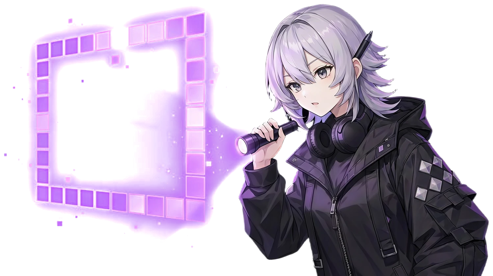

404 · MISSING TILE
This page isn't here.
Tess looked everywhere, but this tile was never made. The link may be old, or the page moved.
Back to Tessera
 TESSERA
TESSERATess looked everywhere, but this tile was never made. The link may be old, or the page moved.
Back to Tessera